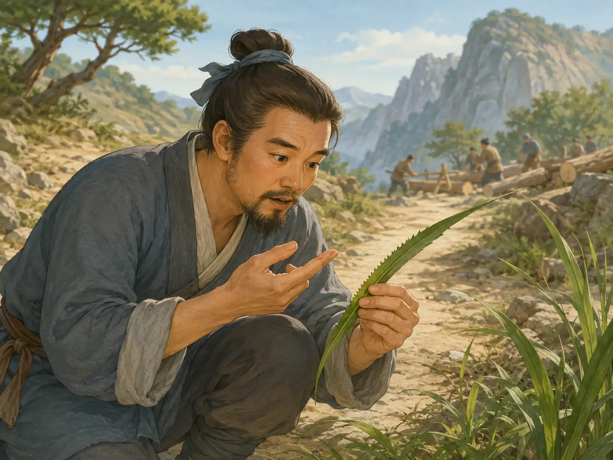
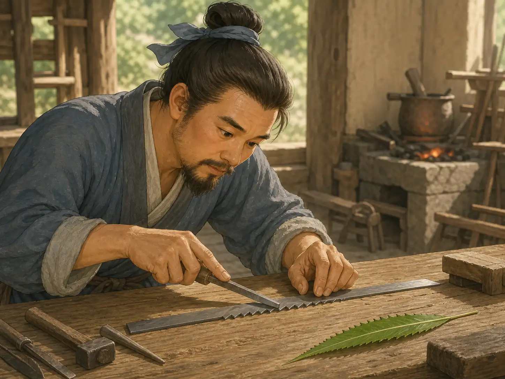
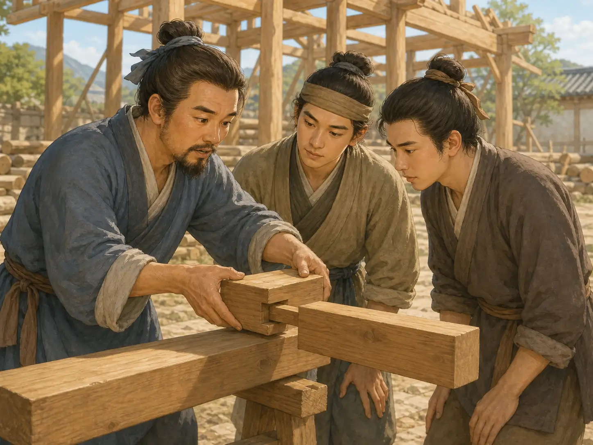

鲁班和长着小齿的草叶
Lu Ban and the Leaf with Tiny Teeth
Page 1
一座宫殿需要多少木头？
How Much Wood Does a Palace Need?

On a mountain path, Lu Ban studies the serrated leaf that has just cut his finger.
一个古老传说讲到，鲁班接到了一件大工程：建造一座宫殿。屋顶需要横梁，大门需要木板，房间还需要一根根柱子。工人们要准备的木头多得吓人。
从早到晚，山上都是斧头砍树的声音。木屑四处飞，工人们的胳膊越来越酸，可木料堆还是不够大。
鲁班决定亲自上山看看。山路又窄又陡，他一脚踩空，连忙伸手抓住旁边的草。
“哎哟！”
鲁班马上松开手。一片草叶竟然把他的手指划破了。
One old legend says that Lu Ban was once given a huge job: build a palace. The roof needed beams. The doors needed boards. The rooms needed row after row of wooden columns. His workers needed more wood than they could cut.
From morning until night, axes thudded against trees. Chips flew. Arms grew sore. Still, the pile of logs was not nearly big enough.
Lu Ban decided to climb the mountain and see the work for himself. The path was steep and narrow. His foot slipped, and he grabbed a handful of grass.
“Ouch!”
Lu Ban quickly let go. One of the leaves had sliced his finger.
Page 2
叶子边上的小齿
The Tiny Teeth on the Leaf

Back in his workshop, Lu Ban copies the leaf's tiny teeth onto a strip of iron.
鲁班差一点就把草叶扔掉了。可是，他停下来，把它拿近了一点。
叶子边上不是光滑的，而是长着一排细小的齿。鲁班小心地碰了碰。一颗小齿勾住了他的皮肤。
这么软的叶子，靠着一排小齿都能划破手。要是把一排小齿做在更硬的东西上，会怎么样？
鲁班把草叶带回工坊。他找来一条薄薄的铁片，在一边做出一排小齿，然后把铁片放到木头上，前后拉动。
第一次，只留下了几道浅浅的划痕。鲁班把小齿修得更整齐，又试了一次。铁齿咬进木头，一道细细的木屑落了下来。
Lu Ban almost tossed the leaf away. Then he stopped and held it closer.
The edge was not smooth. It was lined with tiny teeth. Lu Ban touched one carefully. The little tooth caught against his skin.
If a soft leaf could cut him with such tiny teeth, what could a row of teeth do on something harder?
Lu Ban carried the leaf back to his workshop. He found a thin strip of iron, shaped a row of teeth along one edge, and pulled it back and forth across a piece of wood.
The first try left only a few scratches. Lu Ban made the teeth more even and tried again. This time, the iron teeth bit into the wood, and a thin curl of sawdust fell to the floor.
Page 3
山上响起一种新声音
A New Sound on the Mountain
鲁班带着新工具回到山上，把它放在一根木头上，前后来回拉动。
沙沙，沙沙，沙沙。
一颗铁齿只能咬下一点点木头。可是，一整排铁齿不停地来回移动，很快就把浅浅的划痕变成了一道深口子。
工人们也试了起来。山上仍然有斧头的咚咚声，现在又多了锯子来回拉动的沙沙声。木料一根根准备好了，那堆怎么看都不够用的木头，终于越堆越高。
这就是人们讲述的“鲁班发明锯子”的传说。后来，一代又一代的木匠继续讲着它。一个巨大的难题，最后竟然从一片小小的草叶那里找到了答案。
Lu Ban carried the new tool back up the mountain. He set it against a log and moved it back and forth.
Scrape, scrape, scrape.
One iron tooth could take only a tiny bite of wood. But a whole row of teeth, moving again and again, soon turned a shallow scratch into a deep cut.
The workers tried it too. Axes still thudded on the mountain, but now a new sound joined them: the steady scrape of saws moving back and forth. One log after another was ready to use. At last, the pile that had looked far too small began to grow.
That is the legend people told about Lu Ban and the first saw. Woodworkers passed it down for generations: a huge problem had found its answer in one tiny leaf.
Page 4
一代代木匠的大老师
A Teacher for Generations

In a working carpenter's yard, Lu Ban shows young builders how two wooden beams fit together.
许多年过去了，又过去了许多个世纪。传说里的宫殿消失了，鲁班和草叶的故事却从一个工坊传到了另一个工坊。
中国的木匠渐渐把鲁班尊为祖师爷，也就是这门手艺最早的大老师。学徒学习怎样量木板、磨刀刃、把两块木头接牢时，也会听到鲁班的名字。
工具当然不是鲁班一个人全都发明的。无数工匠一代代把它们改得更好。可是，鲁班的名字慢慢代表了好木匠都需要的本领：仔细的眼睛、灵巧的双手，还有一次不成就再试一次的耐心。
Years passed. Then centuries. The palace in the legend disappeared, but the story of Lu Ban and the leaf traveled from one workshop to the next.
Chinese woodworkers came to honor Lu Ban as the first great teacher of their craft. Apprentices heard his name as they learned to measure boards, sharpen blades, and fit pieces of wood together.
Lu Ban did not invent every tool by himself. Countless builders improved their tools over many generations. But his name came to stand for the things every good builder needs: careful eyes, skillful hands, and the patience to try again when something does not work.
人们为什么记得鲁班
Why People Remember Lu Ban
这就是鲁班为什么有名。他不只是草叶传说里的那个人，也成了中国木匠一代代共同尊敬的大老师。
That is why Lu Ban is still famous. He became more than the man in the story of the leaf. He became the great teacher honored by generations of Chinese woodworkers.